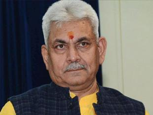

Digital india
Digital India is a campaign launched by the Government of India to ensure that Government services are made available to citizens electronically by improved online rastructure and by increasing Internet connectivity or by making the country digitally empowered in the field of technology.
NEW DELHI: Union telecom minister Manoj Sinha will hold discussions tomorrow with his counterparts in ASEAN countries to strengthen digital connectivity.
The Telecom Equipment and Services Export Promotion Council (TEPC) is organising an inter-ministerial meeting between telecom ministers of ASEAN countries and India in New Delhi on February 20, 2017 to commemorate the 25th year of the ASEAN-India relations, according to a government statement.
"Minister of State for Communications (Independent Charge), Manoj Sinha, will lead the discussions from Indian side," the statement said.
It added that Sinha will hold discussions with telecom ministers, senior government officials and industry leaders from Bangladesh, Cambodia, Laos PDR, Indonesia and Bhutan. The discussions will be held around strengthening and deepening digital connectivity between India and participating countries.
"The Indian government has expressed keen interest to partner with ASEAN countries in enabling Digital Connectivity between India and ASEAN region and also for enabling broadband within ASEAN countries. These digital connectivity projects are of strategic importance and can have a transformative impact on the economy and cooperation between ASEAN and India," the statement said.
India is committed to provide financial as well as technological support for projects that could include high-speed fiber optic networks, digital villages, rural broadband, national knowledge network, secured communication networks and telecom training and skill development, it added.
TEPC will also organise flagship event 'India Telecom 2017: An Exclusive International Business Expo' on February 21-22 in New Delhi to provide opportunities to Indian telecom exporters including SMEs and Startups to meet qualified overseas buyers.
"This event will witness more than 100 foreign high profile ICT industry delegates from over 30 countries. This event provides one to one meeting opportunities between buyers from different countries and Indian exporters who can enlighten them about their products and technology solutions," the statement said.
It was launched on 1 July 2015 by Prime Minister Narendra Modi.BENGALURU: Technology systems, architecture and infrastructure are mature enough to enable the billion or so adults in India to transact digitally. It's now a matter of increasing awareness, says Nilekani Is India's economy prepared to shift from cash to a `less-cash' model that the government has been talking about since demonetisation? Yes, says Nandan Nilekani, a name synonymous with Aadhaar, and now part of the Niti Aayog panel on e-payments that is working with chief ministers to promote the use of digital payments systems across the country.
In an exclusive interview, Nilekani told TOI that the infrastructure needed to enable more than a billion people to transact digitally is already in place, but unlike the West, where card-based payments are more common, the Indian economy will digitalise through mobile-based payments that are faster and cheaper to roll out. Now, it is a matter of increasing awareness and keeping transaction charges low, he added.
At present, only 5% of personal consumption expenditure in India happens digitally. The 600 million debit cards are used mostly for ATM withdrawals while credit cards number merely 20 million. Nilekani said cards and point of sale (PoS) machines have increased slowly because of high maintenance costs.
However, National Payments Corporation of India's (NPCI) new payment applications are designed to work on all phones-- with or without internet--and even without phones. The Aadhaar-enabled payment system for those who don't have phones is likely to enable digital payments by about 350 million people.
For digital payments to catch on, sellers will need to come on board on a large scale. Nilekani said a combination of low transaction charges and formal sector credit will help. Transaction charges are likely to be low because, unlike the card systems that requires significant investment in PoS machines and other infrastructure, the mobile-based system has no such requirements.
Merchants currently prefer cash deals to hide their income because their profit margins are inadequate to pay both taxes and the high rates on informal sector credit. But when they accept digital payments, the income trail will make them eligible for credit from the formal sector at much lower interest rates, besides other products like insurance policies. “Credit is the killer app of digitalisation,“ Nilekani said.